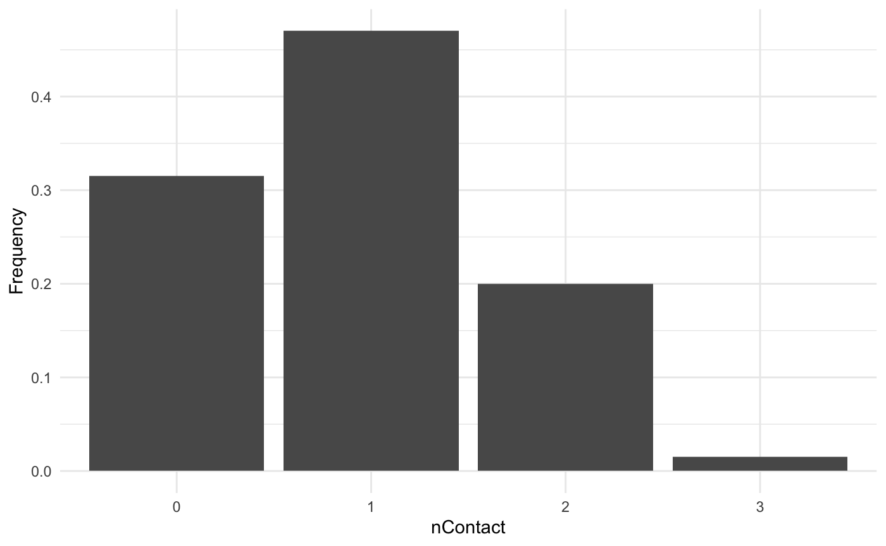
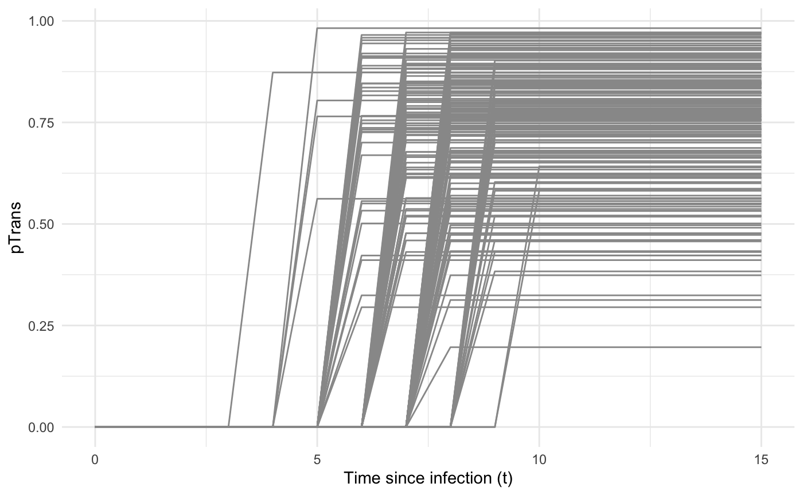
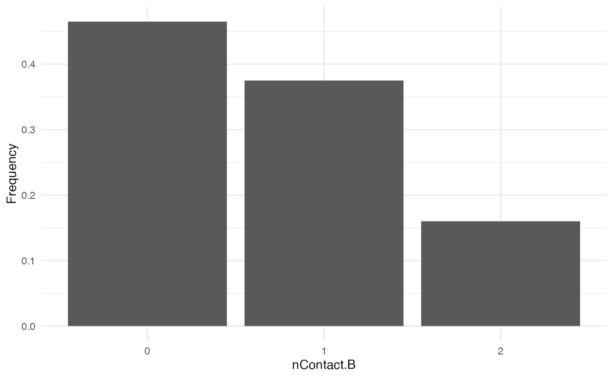

Spread of a pathogen in a homogeneous population
Sebastian Lequime
2019-11-05
Source:vignettes/none.Rmd
none.Rmdnosoi can accommodate a wide range of epidemiological transmission scenarios. and doing so requires providing the proper parameter values. This tutorial aims to illustrate how to set up a nosoi simulation for a “simple” case: a pathogen being transmitted within a population without structure. We will present two cases, first for a single-host, and then a dual-host pathogen.
Setting up the simulation
The wrapper function nosoiSim takes all the arguments that will be passed down to the simulator, in the case of this tutorial singleNone (for “single host, no structure”). We thus start by providing the options type="single" and popStructure="none" to set up the analysis:
This simulation type requires several arguments or options in order to run, namely:
length.simmax.infectedinit.individuals-
pExitwithparam.pExitandtimeDep.pExit -
nContactwithparam.nContactandtimeDep.nContact -
pTranswithparam.pTransandtimeDep.pTrans prefix.hostprogress.barprint.step
All the param.* elements provide individual-level parameters to be taken into account, while the timeDep.* elements inform the simulator if the “absolute” simulation time should be taken into account.
General parameters
length.sim, max.infected and init.individuals are general parameters that define the simulation. length.sim is the maximum number of time units (e.g. days, months, years, or another time unit of choice) during which the simulation will be run, whereas max.infected is the maximum number of individuals that can be infected during the simulation. init.individuals defines the number of individuals (starting at 1, but the provided number has to be an integer) that will start a transmission chain (you will have as many transmission chains as initial individuals that “seed” the epidemic process).
Here, we will run a simulation starting with 1 individual, for a maximum of 1,000 infected individuals and a maximum time of 300 days.
Core functions
The core functions pExit, nContact and pTrans each follow the same principles to be set up. To accommodate different scenarios, they can be constant, time-dependent (using the relative time since infection for each individual or the “absolute” time of the simulation) or even individually parameterized, to include some stochasticity at the individual-host level. In every case, the function provided, like all other core functions in nosoi, has to be expressed as a function of time t, even if time is not used to compute the probability. In case the function uses individual-based parameters, you have to specify a list of functions (called param.pExit, param.nContact or param.pTrans) ( see Get started ). If no individual-based parameters are used, then they are set to NA.
Keep in mind that
pExitandpTranshave to return a probability (i.e. a number between 0 and 1) whilenContactshould return a positive natural number (positive integer).
You can combine the influence of several parameters, such as the time since infection, the “absolute” time of the simulation and individual-based parameters within the same function.
In any case, time since infection and “absolute” time should ALWAYS be designated by
tandprestimerespectively. They also have to be used in the order: (1)t; (2)prestimeand (3) individual-based parameters. This is necessary for the function to be properly parsed bynosoi.
pExit, param.pExit and timeDep.pExit
pExit is the first required fundamental parameter and provides a daily probability for a host to leave the simulation (either cured, died, etc.). param.pExit is the list of functions needed to individually parameterize pExit ( see Get started ). The name of each function in the list has to have the same name as the parameter it is sampling for pExit. timeDep.pExit allows for pExit to be dependent on the “absolute” time of the simulation, to account - for example - for seasonality or other external time-related covariates. By default, timeDep.pExit is set to FALSE.
nContact, param.nContact and timeDep.nContact
nContact represents the number (expressed as a positive integer) of potentially infectious contacts an infected hosts can encounter per unit of time. At each time point, a number of contacts will be determined for each active host in the simulation. The number of contacts (i.e. the output of your function) has to be an integer and can be set to zero. param.nContact is the list of functions needed to individually parameterize nContact ( see Get started ). The name of each function in the list has to have the same name as the parameter it is sampling for nContact. timeDep.nContact allows for nContact to be dependent on the “absolute” time of the simulation, to account - for example - for seasonality or other external time-related covariates. By default, timeDep.nContact is set to FALSE.
pTrans, param.pTrans and timeDep.pTrans
pTrans is the heart of the transmission process and represents the probability of transmission over time (when a contact occurs). param.pTrans is the list of functions needed to individually parameterize pTrans ( see Get started ). The name of each function in the list has to have the same name as the parameter it is sampling for pTrans. timeDep.pTrans allows for pTrans to be dependent on the “absolute” time of the simulation, to account - for example - for seasonality or other external time-related covariates. By default, timeDep.pTrans is set to FALSE.
Miscellaneous
prefix.host allows you to define the first character(s) for the hosts’ unique ID. It will be followed by a hyphen and a unique number. By default, prefix.host is “H” for “Host”.
print.progress allows you to have some information printed on the screen about the simulation as it is running. It will print something every print.step. By default, print.progress is activated with a print.step = 10 (you can change this frequency), but you may want to desactivate it by providing print.progress = FALSE.
Dual host
In the case of a dual host simulation, several parameters of the nosoiSim will have to be specified for each host type, designated by A and B. The wrapper function nosoiSim will then take all the arguments that will be passed down to the simulator, in the case of this tutorial dualNone (for “dual host, no structure”). We thus start by providing the options type="dual" and popStructure="none" to set up the analysis:
As with singleNone, this function takes several arguments or options to be able to run, namely:
length.simmax.infected.Amax.infected.Binit.individuals.Ainit.individuals.B-
pExit.Awithparam.pExit.AandtimeDep.pExit.A -
nContact.Awithparam.nContact.AandtimeDep.nContact.A -
pTrans.Awithparam.pTrans.AandtimeDep.pTrans.A prefix.host.A-
pExit.Bwithparam.pExit.BandtimeDep.pExit.B -
nContact.Bwithparam.nContact.BandtimeDep.nContact.B -
pTrans.Bwithparam.pTrans.BandtimeDep.pTrans.B prefix.host.Bprint.progressprint.step
As you can see, host-type dependent parameters are now designated by the suffix .A or .B.
Both max.infected.A and max.infected.B have to be provided to set an upper limit on the simulation size. To initiate the simulation, you have to provide at least one starting host, either A or B in init.individuals.A or init.individuals.B respectively. If you want to start the simulation with one host only, then init.individuals of the other can be set to 0.
Running nosoi
Single host
We will present here a very simple simulation for a single host pathogen.
pExit
For pExit, we will choose a constant value, namely 0.08, i.e. an infected host has 8% chance to leave the simulation at each unit of time:
Remember that pExit, like the other core functions has to be function of t, even if t is not used. Since pExit is constant here, there is no use for the “absolute” time of the simulation nor for the individual-based parameters. So param.pExit = NA, and timeDep.pExit = FALSE.
nContact
For nContact, we will choose a constant function that will draw a value from a normal distribution with mean = 0.5 and sd = 1, round it, and take its absolute value:
The distribution of nContact looks as follows:
#>
#> Attaching package: 'dplyr'
#> The following objects are masked from 'package:stats':
#>
#> filter, lag
#> The following objects are masked from 'package:base':
#>
#> intersect, setdiff, setequal, union
At each time and for each infected host, nContact will be drawn anew. Remember that nContact, like the other core functions has to be function of t, even if t is not used. Since nContact is constant here, there is no use for the “absolute” time of the simulation nor for the individual-based parameters. So param.nContact = NA, and timeDep.nContact = FALSE.
pTrans
pTrans will be in the form of a threshold function: before a certain amount of time since initial infection, the host does not transmit (incubation time, which we will call t_incub), and after that time it will transmit with a certain (constant) probability (which we will call p_max). This function will be dependent on the time since the host’s infection t:
p_Trans_fct <- function(t, p_max, t_incub){
if(t < t_incub){p=0}
if(t >= t_incub){p=p_max}
return(p)
}Because each host is different (slightly different biotic and abiotic factors), you can expect each host to exhibit differences in the dynamics of infection, and hence the probability of transmission over time. Thus, t_incub and p_max will be sampled for each host individually according to a certain distribution. t_incub will be sampled from a normal distribution of \(mean\) = 7 and \(sd\) = 1, while p_max will be sampled from a beta distribution with shape parameters \(\alpha\) = 5 and \(\beta\) = 2:
t_incub_fct <- function(x){rnorm(x,mean = 7,sd=1)}
p_max_fct <- function(x){rbeta(x,shape1 = 5,shape2=2)}Note that here t_incub and p_max are functions of x and not t (they are not core functions but individual-based parameters), and x enters the function as the number of draws to make.
Taken together, the profile for pTrans for a subset of 200 individuals in the population will look as follows:

pTrans is not dependent on the “absolute” time of the simulation, so timeDep.pTrans = FALSE. However, since we make use of individual-based parameters, we have to provide a param.pTrans as a list of functions. The name of each element within this list should have the same name that the core function (here pTrans) uses as argument, e.g.:
Running
Once nosoiSim is set up, you can run the simulation (here the “seed” ensures that you will obtain the same results as in this tutorial):
library(nosoi)
#> Loading required package: data.table
#>
#> Attaching package: 'data.table'
#> The following objects are masked from 'package:dplyr':
#>
#> between, first, last
#pExit
p_Exit_fct <- function(t){return(0.08)}
#nContact
n_contact_fct = function(t){abs(round(rnorm(1, 0.5, 1), 0))}
#pTrans
p_Trans_fct <- function(t,p_max,t_incub){
if(t < t_incub){p=0}
if(t >= t_incub){p=p_max}
return(p)
}
t_incub_fct <- function(x){rnorm(x,mean = 7,sd=1)}
p_max_fct <- function(x){rbeta(x,shape1 = 5,shape2=2)}
param_pTrans = list(p_max=p_max_fct,t_incub=t_incub_fct)
# Starting the simulation ------------------------------------
set.seed(805)
SimulationSingle <- nosoiSim(type="single", popStructure="none",
length.sim=100, max.infected=100, init.individuals=1,
nContact=n_contact_fct,
param.nContact=NA,
timeDep.nContact=FALSE,
pExit = p_Exit_fct,
param.pExit = NA,
timeDep.pExit=FALSE,
pTrans = p_Trans_fct,
param.pTrans = param_pTrans,
timeDep.pTrans=FALSE,
prefix.host="H",
print.progress=FALSE)
#> Starting the simulation
#> Initializing ...
#> running ...
#> done.
#> The simulation has run for 40 units of time and a total of 111 hosts have been infected.Once the simulation has finished, it reports the number of time units for which the simulation has run (40), and the maximum number of infected hosts (111). Note that the simulation has stopped here before reaching length.sim as it has crossed the max.infected threshold set at 100.
Dual host
Setting up a dual host simulation is similar to the single host version described above, but each parameter has to be provided for both hosts. Host A will use the same parameters as the single / only host above did. Host B will have sightly different parameters:
pExit.B
For pExit.B, we will choose a value that depends on the “absolute” time of the simulation, for example cyclic climatic conditions (temperature). In that case, the function’s arguments should be t and prestime (the “absolute” time of the simulation), in that order:
The values of pExit.B across the “absolute time” of the simulation will be the following:

Since pExit.B is dependent on the simulation’s absolute time, do not forget to set timeDep.pExit.B to TRUE. Since there are no individual-based parameters, param.pExit.B = NA.
nContact.B
For nContact.B, we will choose a constant function that will sample a value out of a provided range of possible values, each with a certain probability:
The distribution of nContact.B looks as follows:

At each time and for each infected host, nContact.B will be drawn anew. Remember that nContact.B, like the other core functions has to be function of t, even if t is not used. Since nContact.B is constant here, there is no use for the “absolute” time of the simulation nor for the individual-based parameters. So param.nContact.B = NA, and timeDep.nContact.B = FALSE.
pTrans.B
pTrans.B will be provided in the form of a Gaussian function. It will reach its maximum value at a certain time point (mean) after initial infection and will subsequently decrease until it reaches 0:
Because each host is here also different (slightly different biotic and abiotic factors), you can expect each host to exhibit differences in the dynamics of infection, and hence the probability of transmission over time. Thus, max.time will be sampled for each host individually according to a certain distribution. max.time will be sampled from a normal distribution of parameters \(mean\) = 5 and \(sd\) = 1:
Note again that here max.time is a function of x and not t (not a core function but individual-based parameters), and x enters the function as the number of draws to make.
Taken together, the profile for pTrans for a subset of 200 individuals in the population will look as follows:

Since pTrans.B is not dependent on the “absolute” time of the simulation, timeDep.pTrans.B = FALSE. However, since we make use of individual-based parameters, we have to provide a param.pTrans as a list of functions. The name of each element of the list should have the same name as the core function (here pTrans.B) uses as argument, as shown here:
Running
Once nosoiSim is set up, you can run the simulation (here the “seed” ensures that you will obtain the same results as in this tutorial):
library(nosoi)
#HostA ------------------------------------
#pExit
p_Exit_fct.A <- function(t){return(0.08)}
#nContact
n_contact_fct.A = function(t){abs(round(rnorm(1, 0.5, 1), 0))}
#pTrans
p_Trans_fct.A <- function(t,p_max,t_incub){
if(t < t_incub){p=0}
if(t >= t_incub){p=p_max}
return(p)
}
t_incub_fct <- function(x){rnorm(x,mean = 7,sd=1)}
p_max_fct <- function(x){rbeta(x,shape1 = 5,shape2=2)}
param_pTrans.A = list(p_max=p_max_fct,t_incub=t_incub_fct)
#Host B ------------------------------------
#pExit
p_Exit_fct.B <- function(t,prestime){(sin(prestime/(2*pi*10))+1)/16}
#nContact
n_contact_fct.B = function(t){sample(c(0,1,2),1,prob=c(0.6,0.3,0.1))}
#pTrans
p_Trans_fct.B <- function(t, max.time){
dnorm(t, mean=max.time, sd=2)*5
}
max.time_fct <- function(x){rnorm(x,mean = 5,sd=1)}
param_pTrans.B = list(max.time=max.time_fct)
# Starting the simulation ------------------------------------
set.seed(606)
SimulationDual <- nosoiSim(type="dual", popStructure="none",
length.sim=100,
max.infected.A=100,
max.infected.B=100,
init.individuals.A=1,
init.individuals.B=0,
nContact.A=n_contact_fct.A,
param.nContact.A=NA,
timeDep.nContact.A=FALSE,
pExit.A=p_Exit_fct.A,
param.pExit.A=NA,
timeDep.pExit.A=FALSE,
pTrans.A=p_Trans_fct.A,
param.pTrans.A=param_pTrans.A,
timeDep.pTrans.A=FALSE,
prefix.host.A="H",
nContact.B=n_contact_fct.B,
param.nContact.B=NA,
timeDep.nContact.B=FALSE,
pExit.B=p_Exit_fct.B,
param.pExit.B=NA,
timeDep.pExit.B=TRUE,
pTrans.B=p_Trans_fct.B,
param.pTrans.B=param_pTrans.B,
timeDep.pTrans.B=FALSE,
prefix.host.B="V",
print.progress=FALSE)
#> Starting the simulation
#> Initializing ... running ...
#> done.
#> The simulation has run for 43 units of time and a total of 101 (A) and 92 (B) hosts have been infected.Once the simulation has finished, it reports the number of time units for which the simulation has run (43), and the maximum number of infected hosts A (101) and hosts B (92). Note that the simulation has stopped here before reaching length.sim as it has crossed the max.infected.A threshold set at 100.
Going further
To analyze and visualize your nosoi simulation output, you can have a look on this page.
You may also want to compose a more complex model by adding some structure (e.g. geography) to your simulation. Two tutorials can guide you on how to set up such structured scenarios:
- Spread of a pathogen in a structured (discrete) population of hosts.
- Spread of a pathogen in a structure (continuous) population of hosts.
A practical example using a dual host type of simulation without population structure is also available: